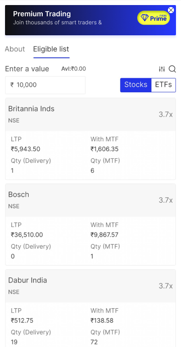

Impact
- —Members in first 30 days
- —From existing customers
- —From new accounts
Numbers go here once the first review is out — tell me the figures and the window and I'll drop them in.
Context
What Prime is
FYERS Prime is a paid membership for people who trade often. Members get brokerage-free orders against a yearly quota, a better MTF slab, higher limits across the platform, premium options analytics, priority support, partner subscriptions and an exclusive theme.
Why FYERS wanted it
A discount broker earns per order, so asking active traders to pay up front for cheaper trading later is a strange proposition on paper. It works for exactly one group: people trading often enough that the maths pays for itself — and those are the same people most likely to keep accounts with two or three brokers at once.
That framed the whole programme. Prime had to read as consolidate here and you come out ahead, never as a toll gate on features people already had. The business goals were equally blunt: keep existing customers, and give new ones a reason to subscribe early.
My role
I owned the membership experience end to end — the public landing page, the nudges placed across the product, the Prime pages inside the profile, the subscription journey, and the design of what sits behind the paywall for everyone who doesn't subscribe. I worked from the PRD with the product owners and made the calls on scope, hierarchy and gating.
Iterations
It started as FYERS One
The first version of this programme wasn't called Prime. It was FYERS One, and it got as far as a full identity and a complete set of designs before the name had to change.
The problem was that the name was already taken: FYERS One meant something else in the product line. Shipping a paid membership under the same name would have left two different things competing for one word, in a product where people are moving money.
The rename wasn't only housekeeping. One reads as a tier — a plain membership level, the first rung of something. Prime is a word people already arrive knowing: it signals a bundle of perks, a members' club, something you join rather than something you're sorted into. For a programme whose whole job was to make a yearly fee feel like a good deal, the familiar word did work the invented one couldn't.
Perks that didn't make it
Two benefits were designed and then cut before launch.
- A partner subscription worth around ₹15,000 was cut once we looked at what including it would require of us. It was the most eye-catching number on the landing page, and still not worth what it asked in return.
- A one-time one-month benefit was dropped for a mix of reasons once we looked at how it would behave alongside the yearly plan.
Both cost us headline value. Both were right — a membership people trust is worth more than one extra perk.
The first version, and what was wrong with it
We're filling this in together, step by step — what v1 looked like, where it broke down, and what you changed because of it.
Final design
The spine of the design is one idea: show the benefit where the benefit applies. Rather than one loud paywall, Prime appears as a contextual nudge at the moment a feature matters — and turns into a status cue once you're a member.
Benefits you can watch yourself use
The members' page isn't a feature list, it's a usage tracker: trades used against the brokerage-free quota, partner subscriptions claimed, webinars coming up. Its real job is to make the renewal decision obvious a year later, which means the value has to stay visible month to month.
One plan, no maths at checkout
V1 deliberately ships a single yearly plan. Pricing is GST-inclusive, discounts show as a struck-through original, coupons apply inline, and the mandate amount is stated before you pay rather than discovered afterwards in a bank SMS.
A membership you can see
The Prime mark sits beside the username with validity underneath, and members get an exclusive theme that quietly reverts to default when a subscription lapses. Support tickets carry the same badge, so priority routing is real rather than advertised.
Touchpoints
Prime shows up across the product wherever one of its benefits is relevant — MTF, orders, options analytics, markets, home, menu. Every one of those places has two states: a pitch before you join, a confirmation after.
The rule I held to was that a nudge has to earn its spot by being specific. A generic "Upgrade to Prime" banner on the MTF screen is noise; a better MTF slab, on the screen where you're using MTF is information. Where I couldn't name the benefit in context, I left the placement out.

After membership, the same slots stop selling. The banner becomes the Prime mark, the locked reports open, the limits lift — the product stops asking and starts confirming.
Next steps
- Monthly alongside yearly. Today Prime is a single yearly subscription. Monthly lowers the barrier for traders who won't commit to a year up front.
- A queue system, so demand can be managed at launch moments rather than everything opening at once.
- Direct payment, cutting a step out of the current checkout.